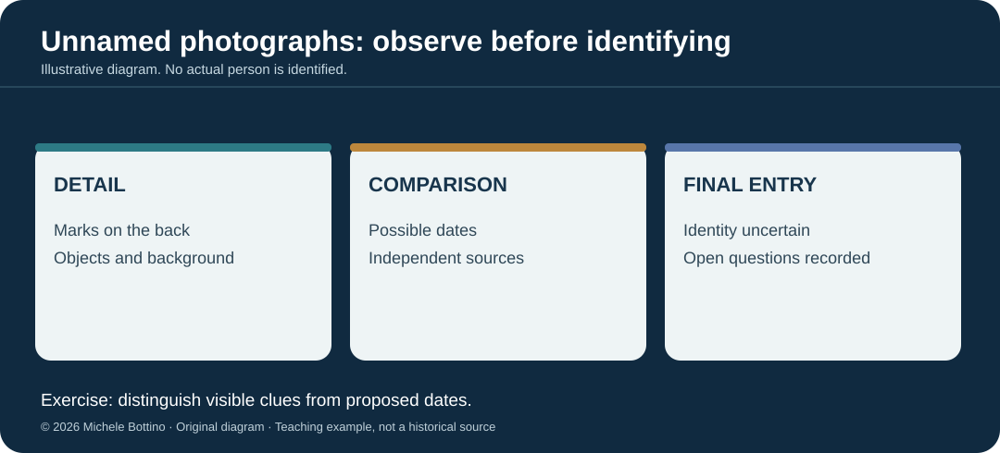

Unnamed photographs
Six units and eighteen lessons on describing photographs in context and distinguishing clues, hypotheses and documented evidence.
Teaching preview under review. Free to consult for individual study. The course is still in development and has not been validated with participants. There is no enrolment, human assessment or certificate. The simulated exercises do not document real events.

Unit 1 of 6 · material under review
When a photograph is found: preserving its order and provenance
Objective: Document the photograph as a physical object and record who kept it before interpreting what it shows.
1.1 Where the photograph was found
Record who kept the image, where it was found and which objects or documents were nearby. Treat the reported location as unconfirmed until you can check it. It does not establish where or when the picture was taken.
1.2 Describing the physical object
Without altering the original, note the format, material, edges, annotations, any numbers on the back and the condition of the photograph. Distinguish legible marks from uncertain readings.
1.3 Documenting the chain of copies
Assign a stable identifier, record each copying or digitisation step, and keep the original image separate from edited versions. A digital fingerprint can confirm that a file is unchanged. It cannot authenticate the historical scene.
Guided exercise
Prepare a catalogue entry for a photograph of uncertain provenance. Include its code, the person said to have kept it, a description of the front and back, and three research questions. Label any fictional example clearly.
Complete the exercise on your device. The site does not collect your work.Self-check
Your selections are not saved and do not constitute an assessment.
Unit 2 of 6 · material under review
What does the image actually show?
Objective: Write a neutral description before proposing explanations.
2.1 First level: visible features
Describe the number of figures, their arrangement, the objects and any text you can actually read. Avoid words that assume an undocumented occupation, family tie or circumstance.
2.2 Second level: reported information
Record separately what the person handing over the photograph tells you. Note the name, date and circumstances of the statement, taking appropriate steps to protect privacy.
2.3 Third level: interpretations
Suggest more than one plausible reading of the clues. A uniform may suggest a setting. On its own it cannot establish someone’s role, rank or identity.
Guided exercise
Write three short paragraphs about one image, headed OBSERVED, REPORTED and HYPOTHESISED. Highlight two terms that might make a hypothesis sound like a fact.
Complete the exercise on your device. The site does not collect your work.Self-check
Your selections are not saved and do not constitute an assessment.
Unit 3 of 6 · material under review
Dating an image within a defensible range
Objective: Establish reasoned time limits and retain the uncertainty that remains.
3.1 Date of exposure and date of printing
A photograph may have been reprinted many years after it was taken. Record the dates of exposure, printing and acquisition by the archive separately.
3.2 Clues to the earliest and latest possible dates
Compare inscriptions, stamps, techniques and context with dated references. Distinguish the earliest from the latest possible date. Check whether a date written on the back refers to the exposure.
3.3 Date ranges and conflicting clues
When clues disagree, give the most cautious defensible range and explain the evidence for each competing hypothesis. Avoid stating an exact year without proof.
Guided exercise
In an explicitly fictional example, compare a stamp reading “1954”, a reprint said to date from 1971 and a recollection of “the early 1950s”. Propose a reasoned date range that distinguishes the three references.
Complete the exercise on your device. The site does not collect your work.Self-check
Your selections are not saved and do not constitute an assessment.
Unit 4 of 6 · material under review
Cross-checking places, clothes, objects and sources
Objective: Compare photographic clues with independent evidence.
4.1 From resemblance to corroboration
A similar-looking building or garment cannot establish a place or period by itself. Record the features compared and the differences.
4.2 Independent evidence
Three websites copying the same caption form one chain of information. Look for independent inventories, maps or photographs. Record the origin and date of each source.
4.3 A comparison table
For each claim, record the clue, source, degree of agreement, a possible alternative explanation and the check still needed.
Guided exercise
Build a table with three possible clues to the location. Include at least one independent source or state explicitly that none is available.
Complete the exercise on your device. The site does not collect your work.Self-check
Your selections are not saved and do not constitute an assessment.
Unit 5 of 6 · material under review
Possible names and unconfirmed identities
Objective: Handle proposed identifications without making unsupported attributions.
5.1 Recognising a face and establishing identity
Facial resemblance, a caption added later and a family story are different kinds of clues. None establishes identity on its own.
5.2 Recording proposed names
For each proposed name, note who suggested it, when, what first-hand knowledge they had and which documents support or contradict the attribution.
5.3 People and their rights
Avoid publishing personal data, intimate details or unverified identifications. When living people are involved, consider consent, the need to publish and the form publication will take.
Guided exercise
Invent two explicitly hypothetical identifications for an anonymous figure. Then write a publishable caption that presents neither name as established.
Complete the exercise on your device. The site does not collect your work.Self-check
Your selections are not saved and do not constitute an assessment.
Unit 6 of 6 · material under review
The final atlas: 12 entries and a register of open questions
Objective: Organise a usable atlas that distinguishes evidence, hypotheses and gaps.
6.1 Structuring the atlas
Prepare twelve entries with a code, description, provenance, proposed dating, sources and status of identifications. If you have fewer photographs, label the result as a partial prototype.
6.2 Open questions and revisions
Give each unresolved question a code. Record updates, revisions and newly available sources. Keep a record of what you ruled out and why.
6.3 Review and publication
Check readability, captions, image rights and protection of the people shown. External review requires another person to review the work. Completing your own checklist does not fulfil that role.
Guided exercise
Prepare a template for twelve entries. Fill in at least one using a clearly labelled fictional example. Add a register of five open questions and possible future checks.
Complete the exercise on your device. The site does not collect your work.Self-check
Your selections are not saved and do not constitute an assessment.
A real photograph: an additional exercise
Try the interactive photography workshop, which uses a portrait of Mary Church Terrell held by the Library of Congress. The sitter is identified in the catalogue. The question in this exercise is when the photograph was taken.